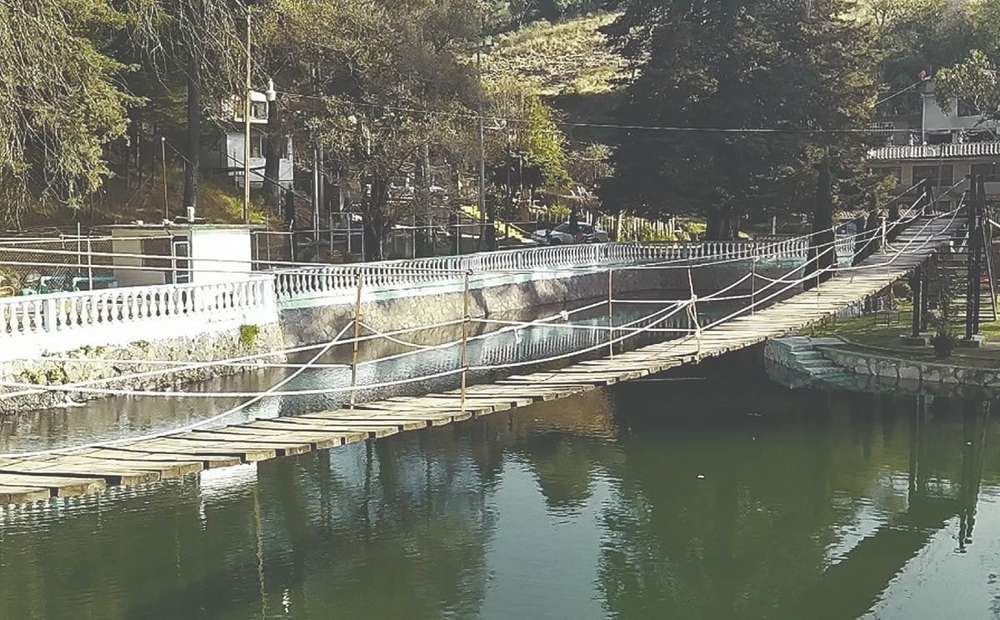

El Ojo de Agua de San Pedro y su Alberca Natural en Xonacatlán
El Ojo de Agua de San Pedro en San Miguel Mimiapan, ahora conocido como la Alberca de San Pedro, es un manantial natural que brotaba originalmente entre árboles, y se ha transformado con el paso de los años. A pesar de la tala clandestina que ha afectado el ecosistema, este espacio sigue siendo una fuente de agua y un atractivo turístico.

Evolución del Ojo de Agua:
| Detalles | Descripción |
|---|---|
| Origen: | El Ojo de Agua existía incluso antes de que Mimiapan se separara del municipio de Otzolotepec, aproximadamente en 1643. |
| Transformación: | Con el tiempo, la zona se ha modificado, incluyendo la construcción de la alberca que se conoce hoy en día. |
| Importancia: | El Ojo de Agua de San Pedro sigue siendo una fuente de agua para la comunidad y un atractivo turístico. |
| Impacto ambiental: | La tala clandestina ha afectado el ciclo del agua y el ecosistema, lo que ha generado preocupaciones sobre la sostenibilidad del Ojo de Agua. |
La Alberca Natural
La alberca de San Pedro, alimentada por este ojo de agua, es un regalo natural en el municipio de Xonacatlán, Estado de México, muy cerca del Valle de Toluca. Su origen se debe a un generoso manantial que constantemente la abastece, creando un espejo de agua con una peculiar isla central. Este islote, adornado con bancas y árboles, invita al descanso y la contemplación.
Este rincón es un punto de encuentro para los habitantes de los municipios cercanos, quienes disfrutan sumergiéndose en sus aguas cristalinas. Además de la alberca, los visitantes pueden aventurarse a explorar el cerro circundante, donde un hermoso bosque espera con senderos para caminar y disfrutar de la naturaleza.
En resumen, la alberca de San Pedro ofrece:
- Origen Natural: Formada por un constante manantial.
- Características Únicas: Un islote central con áreas de descanso arboladas.
- Actividades Recreativas: Ideal para nadar y realizar caminatas en el cerro boscoso.
- Ubicación Privilegiada: En Xonacatlán, Estado de México, cerca de Toluca.
- Atractivos Adicionales: Un bosque en la parte alta del cerro para explorar.